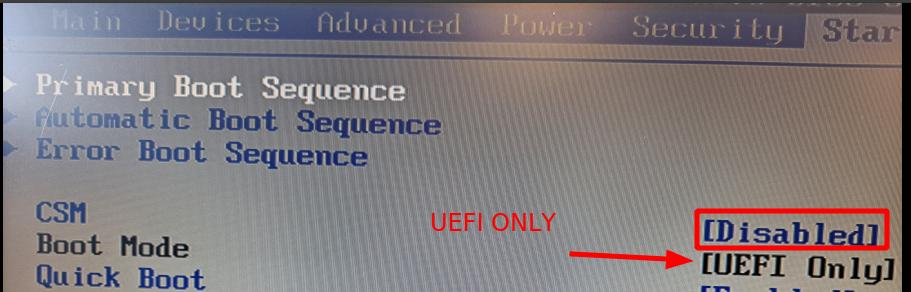

Se facendo o que se indicaba en páxina de "Arranque Dual Windows Linux en GPT" o sistema non inicia, imos comprobar os seguintes pasos:
Accedemos á BIOS do equipo e comprobamos que está configurada en modo UEFI. No caso de ter modo de compatibilidade CSM, comprobamos que éste está deshabilitado, 
ou ben, si está habilitado que estea en modo UEFI ONLY
Co secure boot habilitado podemos ter problemas coas firmas dos sistemas operativos cos que traballamos, se non están firmados ou a súa firma non está rexistrada na CMOS, así que mellor o temos deshabilitado.
Na orden de arranqeu da BIOS, configuramos que arranque primeiro Ubuntu.

Se a configuración se fixo ben. Os dous sistemas foron instalados coa BIOS en modo UEFI no período de instalación e se mantén o modo UEFI, debería de funcionar todo e aparecer o xestor de arranque de gnu/linux GRUB

Como no estado inicial do noso disco, temos un Windows Instalado. Debería o xestor de arranque de ubuntu ofrecernos iniciar cada un dos dous sistemas.
De non facelo imos facer comprobacións.
Tecleamos na terminal do noso sistema linux o comando os-prober

Na execución deste comando, debería de aparecer o cargador EFI do Windows. O Windows Boot Manager:efi
!!! Impte !!! De non detectar o Windows Boot Manager, comprobar se realmente está configurado o modo UEFI na BIOS. E por suposto se existe información do sistema na partición de Windows.
Se o os-prober detectou o cargador de Windows, entón actualizamos o grub
sudo update-grub
Como se pode ver na imaxe, o xestor de arranque, grub, detectou o cargador do SO Windows bootmgfw.efi
Así que si reiniciamos, agora xa debería de aparecer o menú do grub do que se fala no punto 4.
Un dos ficheiros que configura o xestor de arranqeu grub é o /etc/default/grub se o editamos con
sudo nano /etc/default/grub
E desactivamos as opcións:
GRUB_DEFAULT=0
#GRUB_TIMEOUT_STYLE=hidden #COMENTAMOS ESTA LIÑA XA QUE O
#INDICA É QUE NON SE AMOSE O MENÚ DE ARRANQUE
GRUB_TIMEOUT=10 #ASIGNAMOS AQUÍ 10 SEGUNDOS PARA ESCOLLER OPCIÓN
GRUB_DISTRIBUTOR=`lsb_release -i -s 2> /dev/null || echo Debian`
GRUB_CMDLINE_LINUX_DEFAULT="libata.noacpi=1"
GRUB_CMDLINE_LINUX=""
# Uncomment to enable BadRAM filtering, modify to suit your needs
# This works with Linux (no patch required) and with any kernel that obtains
# the memory map information from GRUB (GNU Mach, kernel of FreeBSD ...)
#GRUB_BADRAM="0x01234567,0xfefefefe,0x89abcdef,0xefefefef"
# Uncomment to disable graphical terminal (grub-pc only)
#GRUB_TERMINAL=console
# The resolution used on graphical terminal
# note that you can use only modes which your graphic card supports via VBE
# you can see them in real GRUB with the command `vbeinfo'
#GRUB_GFXMODE=640x480
# Uncomment if you don't want GRUB to pass "root=UUID=xxx" parameter to Linux
#GRUB_DISABLE_LINUX_UUID=true
# Uncomment to disable generation of recovery mode menu entries
#GRUB_DISABLE_RECOVERY="true"
# Uncomment to get a beep at grub start
#GRUB_INIT_TUNE="480 440 1"
GRUB_DISABLE_OS_PROBER=false # ENGADIMOS ESTA LIÑA PARA QUE DETECTE O
# OS-PROBER, É DICIR A CARGA DOUTROS SISTEMAS OPERATIVOS

E finalmente actualizamos o grub
sudo update-grub